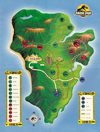

On the Island of Isla Nublar a new park has been built. Jurassic Park is a theme park populated with cloned dinosaurs!!
Industrialist John Hammond and his bioengineering company, InGen, have found a way to create dinosaurs. They think they have a safety net using a lysine (C6H14N2O2) contingency plan.
Ray Arnold stated:
The lysine contingency is intended to prevent the spread of the animals in case they ever get off the island. Dr. Wu inserted a gene that makes a single faulty enzyme in protein metabolism. The animals can't manufacture the amino acid lysine. Unless they're continually supplied with lysine by us, they'll slip into a coma and die.